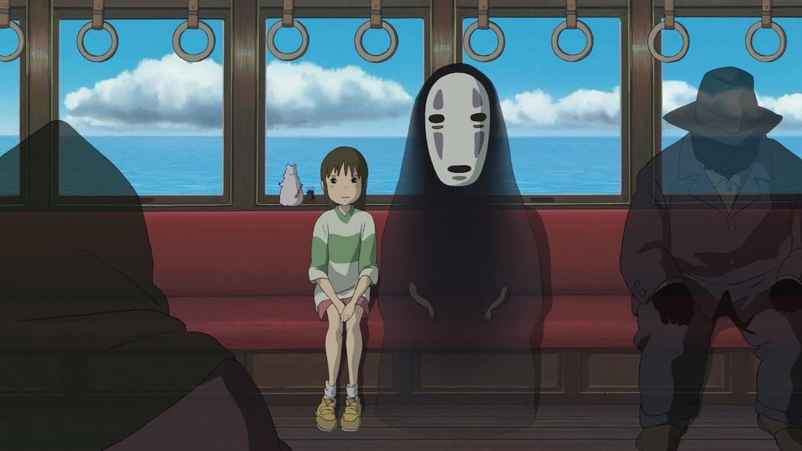
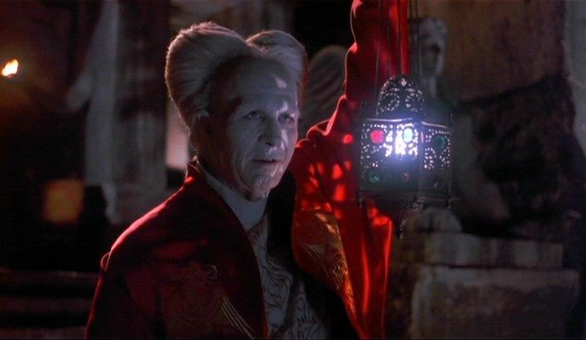
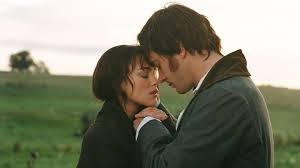

Sobre mí
Soy desarrolladora de software en formación, actualmente estoy cursando la Tecnicatura en Desarrollo de Software (IFTS N°29). Trabajo con C#, Python y Kotlin. Tengo experiencia desarrollando aplicaciones de escritorio y móviles con Android Studio. También manejo bases de datos como MySQL y Firestore, y herramientas de gestión de proyectos como Trello y ClickUp.
Dentro de lo técnico, disfruto analizar problemas y buscar soluciones eficientes, tratando de optimizar y mejorar cada desarrollo. Me considero una persona creativa, con capacidad de trabajo en equipo y con ganas de seguir creciendo en el mundo del desarrollo de software. Me caracterizo por aprender rápido, adaptarme a nuevos desafíos y trabajar con compromiso, prestando atención a los detalles.
En mi tiempo libre practico remo, una actividad que me ayuda a mantener la constancia y la disciplina, valores que también aplico en mi forma de trabajar.

Proyectos

Mobile App
Aplicación desarrollada para la materia "Desarrollo de Aplicaciones Móviles". Los requisitos eran: iniciar sesión en la aplicación como administrador, registrar clientes, pagar cuotas y actividades, y consultar las fechas de vencimiento diarias. Se maquetó en Figma y se desarrolló en Android Studio utilizando Kotlin y XML


Desktop App - Inglés
Aplicación de escritorio personalizada, diseñada para un profesor de inglés sobre la base de un ejercicio. Los requerimientos del sistema fueron, por un lado, gestionar un crud para categorias semánticas y dentro de ellas para palabras o frases y por el otro, generar una visualización random y no repetitiva de esas palabras una vez seleccionada la categoría. La aplicación se desarrollo en C# con Visual Studio utilizando Windows Forms
Habilidades
| Domino | Deseo Aprender | Hobbies |
|---|---|---|
| HTML, CSS, JavaScript, Python, Kotlin, Git, Figma, Mysql, Trello | React, Node.js, Java, ApiREST, Kubernetes | Remo, Natación, Amigurumis, Huerta |
Contacto
Películas Favoritas

El viaje de Chihiro
La historia sigue a Chihiro en un viaje por un mundo extraño lleno de seres mágicos y sucesos inexplicables. Una metáfora de la evolución personal, donde Chihiro debe aprender a adaptarse a su nuevo entorno y descubrir su fuerza interior. La película trata temas universales pero desde el subtexto, dejando cierto espacio para la interpretación del espectador. Además, su marcado realismo mágico hace que muchas veces la acción avance de forma algo más abstracta e intuitiva, un rasgo habitual en la filmografía de Miyazaki.

Drácula
Una reinterpretación del mito clásico que pone el foco en el amor como fuerza trágica y destructiva, donde Drácula no es solo un monstruo, sino una figura atravesada por la pérdida y la condena. La película trabaja temas universales como el deseo, la muerte y la dualidad entre lo humano y lo monstruoso, apoyándose mucho en lo simbólico más que en lo explícito. Además, su estilo visual es muy marcado, con una estética teatral y recargada que refuerza lo emocional por sobre lo realista. El uso de luces, sombras y efectos prácticos genera una atmósfera casi onírica, donde la narrativa avanza más por sensaciones que por lógica, dándole un tono intenso y por momentos hipnótico.

Orgullo y Prejuicio
Una adaptación que pone el foco en los vínculos, el orgullo y las barreras sociales, mostrando cómo las emociones y los juicios apresurados pueden condicionar las relaciones. La película trabaja temas universales como el amor, la clase social y el crecimiento personal, desarrollándolos de forma sutil, más desde los gestos y las miradas que desde lo explícito. Además, su tono es íntimo y delicado, con una puesta en escena que acompaña lo emocional sin exagerarlo. Los paisajes, la música y los silencios construyen una atmósfera tranquila y envolvente, donde la historia avanza de forma pausada, dando espacio a que cada cambio en los personajes se sienta natural y creíble.